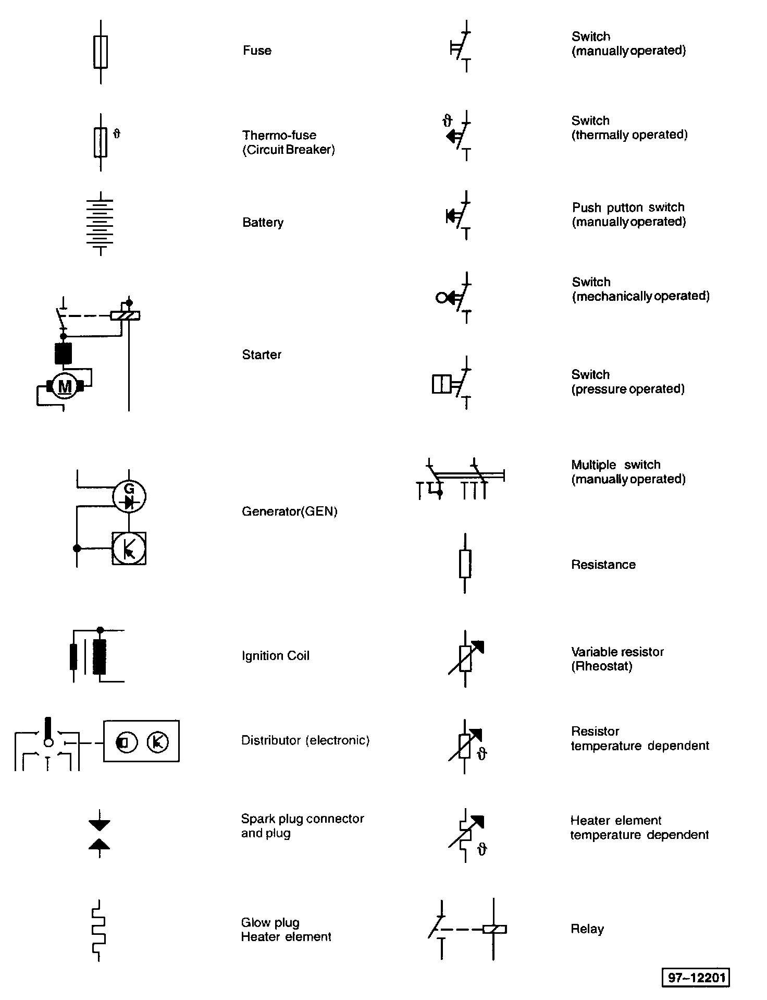
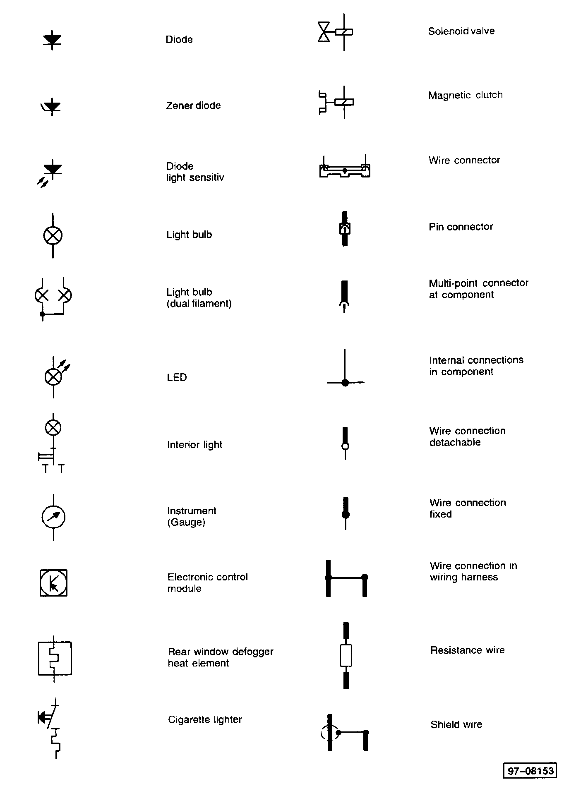

Operation CHARM
: Car repair manuals for everyone.
Home
>>
Volkswagen
>>
1997
>>
GTI (1H1) V6-2.8L (AAA)
>>
Repair and Diagnosis
>>
Sensors and Switches
>>
Sensors and Switches - Starting and Charging
>>
Ignition Switch
>>
Diagrams
>>
Diagram Information and Instructions
>>
Symbols Used In Wiring Diagrams
Symbols Used In Wiring Diagrams
Symbols Used In Wiring Diagrams
Part 1:

Part 2:

Part 3: